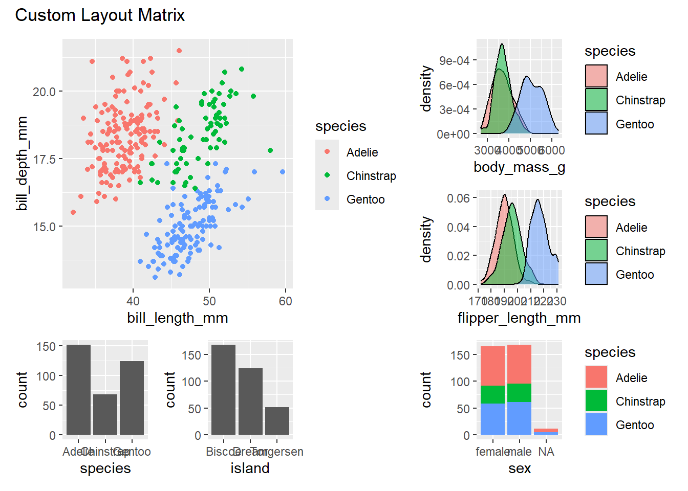
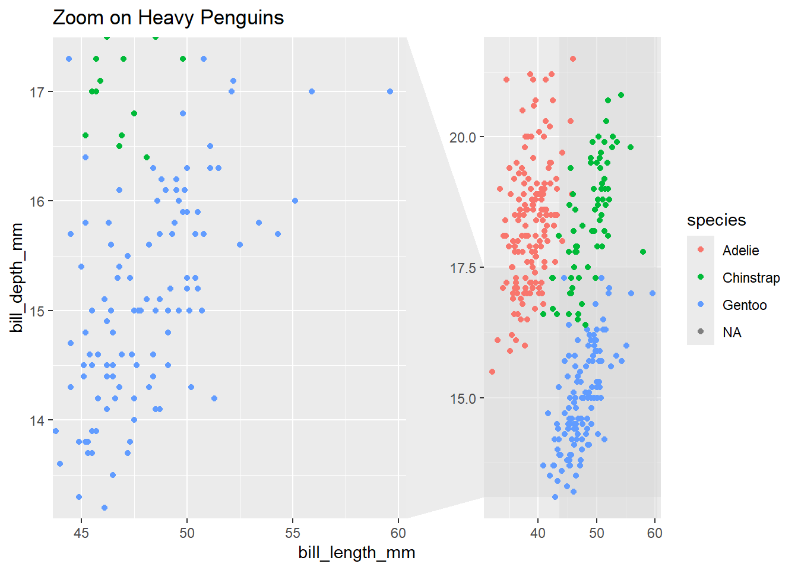

Show the code
library(tidyverse)
library(ggforce) # For advanced faceting
library(ggh4x) # For enhanced faceting
library(patchwork) # For combining plots
library(palmerpenguins)Faceting in ggplot2 goes beyond simple grid layouts. This guide explores advanced techniques for creating complex and informative faceted visualizations.
# Create custom layout matrix
layout_matrix <- "
112
113
456
"
# Generate individual plots
p1 <- ggplot(penguins, aes(bill_length_mm, bill_depth_mm, color = species)) +
geom_point()
p2 <- ggplot(penguins, aes(body_mass_g, fill = species)) +
geom_density(alpha = 0.5)
p3 <- ggplot(penguins, aes(flipper_length_mm, fill = species)) +
geom_density(alpha = 0.5)
p4 <- ggplot(penguins, aes(species)) +
geom_bar()
p5 <- ggplot(penguins, aes(island)) +
geom_bar()
p6 <- ggplot(penguins, aes(sex, fill = species)) +
geom_bar()
# Combine with layout
(p1 + p2 + p3 + p4 + p5 + p6) +
plot_layout(design = layout_matrix) +
plot_annotation(title = "Custom Layout Matrix")

# Create long labels
penguins_long <- penguins %>%
mutate(
species_desc = case_when(
species == "Adelie" ~ "Adelie (Small Size)",
species == "Gentoo" ~ "Gentoo (Large Size)",
species == "Chinstrap" ~ "Chinstrap (Medium Size)"
)
)
# Use wrapped strips
ggplot(penguins_long,
aes(bill_length_mm, bill_depth_mm, color = sex)) +
geom_point() +
facet_wrap(~species_desc,
labeller = label_wrap_gen(width = 15)) +
labs(title = "Wrapped Strip Labels")# Custom breaks for specific facets
breaks <- list(
Adelie = seq(30, 50, by = 5),
Gentoo = seq(40, 60, by = 5),
Chinstrap = seq(35, 55, by = 5)
)
# ggplot(penguins, aes(bill_length_mm, bill_depth_mm)) +
# geom_point() +
# facet_wrap2(~species, scales = "free_x",
# axes = "x") +
# scale_x_continuous(breaks = breaks) +
# labs(title = "Custom Breaks by Species")# Function to create dynamic facets
create_facets <- function(data, facet_var) {
ggplot(data, aes(bill_length_mm, bill_depth_mm, color = species)) +
geom_point() +
facet_wrap(vars(!!sym(facet_var))) +
labs(title = paste("Faceted by", facet_var))
}
# Apply to different variables
p1 <- create_facets(penguins, "island")
p2 <- create_facets(penguins, "sex")
p1 / p2# Show facets only for specific conditions
penguins %>%
group_by(species, island) %>%
filter(n() >= 20) %>% # Only show groups with sufficient data
ggplot(aes(bill_length_mm, bill_depth_mm, color = sex)) +
geom_point() +
facet_grid(species ~ island) +
labs(title = "Facets with Sufficient Data Only")# Customize strip appearance
ggplot(penguins, aes(bill_length_mm, bill_depth_mm, color = sex)) +
geom_point() +
facet_wrap(~species) +
theme(
strip.background = element_rect(
fill = "navy",
color = "black",
linewidth = 1
),
strip.text = element_text(
color = "white",
face = "bold",
size = 12
)
) +
labs(title = "Custom Strip Styling")# Different colors for different strips
species_colors <- c(
"Adelie" = "#FF9999",
"Gentoo" = "#99FF99",
"Chinstrap" = "#9999FF"
)
ggplot(penguins, aes(bill_length_mm, bill_depth_mm)) +
geom_point() +
facet_wrap(~species) +
theme(
strip.background = element_rect(
fill = species_colors[unique(penguins$species)]
),
strip.text = element_text(
color = "black",
face = "bold"
)
) +
labs(title = "Species-Specific Strip Colors")# Consider when to use free scales
p1 <- ggplot(penguins, aes(bill_length_mm, bill_depth_mm)) +
geom_point() +
facet_wrap(~species) +
labs(title = "Fixed Scales")
p2 <- ggplot(penguins, aes(bill_length_mm, bill_depth_mm)) +
geom_point() +
facet_wrap(~species, scales = "free") +
labs(title = "Free Scales")
p1 / p2# Clear information hierarchy
ggplot(penguins, aes(bill_length_mm, bill_depth_mm, color = sex)) +
geom_point() +
facet_grid(
island ~ species,
switch = "y"
) +
theme(
strip.text.y = element_text(angle = 0),
strip.background = element_rect(fill = "gray95"),
panel.spacing = unit(1.5, "lines")
) +
labs(title = "Clear Facet Hierarchy")# Bad: Too many facets
bad_facets <- ggplot(penguins,
aes(bill_length_mm, bill_depth_mm, color = sex)) +
geom_point() +
facet_grid(species ~ island ~ sex)
# Better: Simplified faceting
good_facets <- ggplot(penguins,
aes(bill_length_mm, bill_depth_mm, color = sex)) +
geom_point() +
facet_grid(species ~ island)
# Compare
bad_facets + labs(title = "Too Many Facets")# Problem: Overlapping labels
problem_labels <- ggplot(penguins,
aes(bill_length_mm, bill_depth_mm)) +
geom_point() +
facet_wrap(~species, labeller = label_wrap_gen(width = 5))
# Solution: Proper wrapping and spacing
fixed_labels <- ggplot(penguins,
aes(bill_length_mm, bill_depth_mm)) +
geom_point() +
facet_wrap(
~species,
labeller = label_wrap_gen(width = 10)
) +
theme(
strip.text = element_text(margin = margin(5, 0, 5, 0))
)
# Compare
problem_labels + labs(title = "Overlapping Labels")